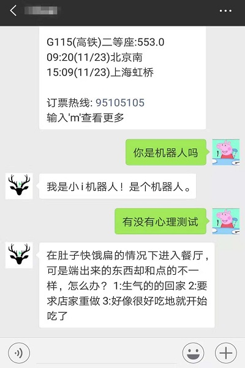

还未完成暂不开放，谢谢
这里有两种机器人可以选择，一个是小I机器人，一个是图灵机器人，各自有各自的特点吧，小I可以设置自动回复，图灵机器人则相比更加智能一点，这里用的是小I，因为图灵需要我有国内手机验证码。
注册成功后，点击开发者中心会有key和secret，我们就是用这两个了。

首先还是登录全部代码from wxpy import * bot = Bot()然后我们就需要填写key和secret了xiaoi=XiaoI('你的key','你的secret') my_friend = bot.friends() @bot.register(my_friend,TEXT) #限定给谁回复，这里是所有人都有，只回复文字内容。 def do_reply(msg): xiaoi.do_reply(msg)接下来就是启动程序并且保持登录状态embed()
from wxpy import *
bot=Bot()
xiaoi=XiaoI('******','********')
my_friend = bot.friends()
@bot.register(my_friend,TEXT)
def do_reply(msg):
xiaoi.do_reply(msg)
embed()具体效果如下
很简单吧，几行代码就搞定一个人工智能。接下来分析一下自己的好友吧
代码在这里
还未完成暂不开放，谢谢

还未完成暂不开放，谢谢

还未完成暂不开放，谢谢
如果大家有什么建议或者建议请及时联系我我才能为大家做出更好的教程